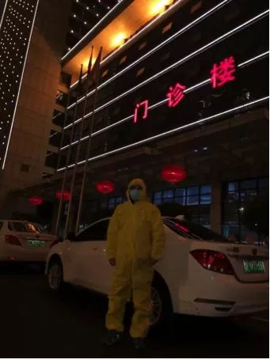

武汉机动车禁令后，这支四千人志愿车队说：“我们还在”
原文链接 备份链接 *************▲************* 一名志愿车队司机和坐车的医护人员合影。 （受访者供图/图） 全文共*3020*字，阅读大约需要8分钟。 看着后视镜里，这个女医生崩溃得痛哭流涕，李小熊强压悲伤， …
27.01.2020

本文字数：1459，阅读时长大约2.5分钟
导读：“我生活在武汉，我热爱武汉。只有城市健康了，我们居民才会有舒适的小日子。”
作者 | 第一财经 刘佳
清晨6点的武汉，天还没亮，身穿黄色防护服、戴好口罩和护目镜的网约车司机别华容已经开着车行驶在路上了。
他负责接一位武汉协和医院的医生上班。把医生送到后，戴着口罩的医生和他拍照留念，还要加他微信发红包祝福新年好，别师傅婉拒了他。

“他们是最辛苦，压力最大的。还有（医生）送我们口罩、消毒喷雾的，谢谢他们为武汉做的一切。”别师傅说。
别师傅所在的车队有20多人。他说，只要有出行需求，都抢着上，如果有忙不过来的，或者谁距离需要接送人近的，只要说一声都立马有人会帮忙。忙不过来时，有人连早餐都没吃一直工作到下午，随便吃点继续工作，尽最大的能力多接送医护人员。
每天根据调度安排接送医护工作者上“前线”，中午随便对付一口，下午继续接送， 像别师傅这样的网约车司机还有不少。
此前，应武汉市新冠肺炎防控指挥部要求，1月24日12时起，滴滴出行暂停武汉网约车运营。一天后，在向武汉有关部门报备后，滴滴宣布组建首批100名司机组成的医护保障车队，统一接受武汉相关部门的集中调度，在尽力保障司机自身安全的前提下，从25日凌晨开始，为武汉各医院医务工作者提供免费出行服务。

相关工作人员告诉第一财经记者，车队的所有司机要做好充足的防护工作后才能上岗，为此滴滴专门给司机配发了防护服、口罩、护目镜和消毒液，考虑到可能春节司机可能会不能正常用餐，还准备了泡面和矿泉水。司机们在回家前，要按照要求处理使用过的防护服和口罩，回家第一件事就是洗手消毒。
和别师傅工作类似，武汉医护保障车队的杨俊师傅主要负责武汉市中心医院医护人员的接送。
按照杨俊原来的计划，在武汉过春节后，初四左右回老家走亲戚。但这次突然遇到肺炎扩散严重的情况，他决定不回去了，“万一传染别人就是添乱”。
他说，自己在得到消息后一直守着手机，抢在第一时间报名接受保障车队任务。至于为什么加入，没想太多，就是想做点自己能够做的事情，“专业的事情我不会，但是开车送人本来就是我每天的工作。”
从25日起，杨俊开始正式接受调派。他说，接送任务很暖心，第一位医护人员突然问他贵姓的时候，没多想就说了。没想到，他的名字居然出现在医护人员的一条朋友圈里。在接送了多单之后，杨俊的一个感受是，医护工作者非常专业，下车前都会自己携带酒精对自己接触到的车上所有地方喷洒消毒。
刚出任务时，杨俊说他的家人并不能完全理解，叮嘱的话语里略带抱怨，但他在出完任务回去后，和家人聊聊一天的经历和感受后，家人反倒是开始支持和理解。
但也有司机，选择没有告诉家人自己参加车队。一位主要负责接送南京路中心医院医护人员的邵师傅说，是因为怕家人担心。“没想太多，就是希望能让城市尽快恢复秩序，大家回到正常生活，好好工作，好好生活。”
他说，他的队友们都特别积极，“恨不得奉献出自己的每一分每一秒，让人感觉团结一致的力量真的非常好。”

除了接送医护人员外，为解决市民居家出行不便等问题，武汉市全市紧急征集6000台出租车，分配给中心城区。其中滴滴目前正召集1336名网约车司机，组建“社区保障车队”并交相关部门和社区居委会统一调度，为武汉各社区民众提供免费出行服务。
负责武汉市洪山区毛坦社区的保障车队毛师傅说，自己曾亲身经历过2003年非典时期的武汉，这次还是想为武汉尽一份力。他的职责是保障毛坦社区必要的出行需求服务，目前社区情况比较平稳，有发热病人，但是社区组织了医疗救助小队。“能感觉到肩上的责任和压力，希望能够服务好大家。”
在无数司机春节无休随时待命的背后，一位保障车队的司机说，自己的初衷很简单，“我生活在武汉，我热爱武汉。只有城市健康了，我们居民才会有舒适的小日子。”
【推荐阅读】
UP主实拍：“空城”武汉的物价、交通 、生活状态


原文链接 备份链接 *************▲************* 一名志愿车队司机和坐车的医护人员合影。 （受访者供图/图） 全文共*3020*字，阅读大约需要8分钟。 看着后视镜里，这个女医生崩溃得痛哭流涕，李小熊强压悲伤， …
原文链接 备份链接 受到武汉新发布限行令的影响，也出于对车主健康的担忧，善缘车队停止接送医护人员。26日上午，在一些武汉本地的互助群里，提供免费住宿或为医生送餐的武汉市民们还在热议：目前我们还没收到通知，是不是还可以自发去接送医生？ 本 …
原文链接 备份链接 医疗防护资源不足是常态，各地资源调配需平衡，“灯下黑”区域渐次光亮，但少数地区的疫情宣传依旧不到位 外地务工返乡者最担忧的问题是年后经济收入断流、地域歧视，担心节后可能无法返工 本文首发于南方人物周刊 文 | 本刊记 …
原文链接 备份链接 支援武汉的医护人员已上千，地方900多人，军队450人，随后将再派1600多人。 武汉医护人员身心俱疲，难以应对不断增长的病例和民众的恐慌。 外援的到来，缓解了他们的负担。不少援汉医护人员感到，仅从肺炎诊治难度而 …
原文链接 备份链接 特约撰稿 李梦琪 本报记者 郭阳琛 石英婧 上海报道 “我比很多同事都幸运，除夕是在家过的。”已经在抗击疫情一线连续奋战了二十多天，除夕夜能和家人在一起度过让武汉市肺科医院隔离病区护士吴青（化名）格外欣慰。 由于武汉疫 …